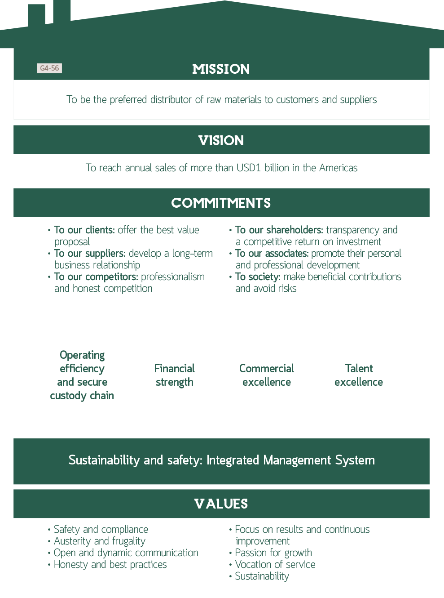
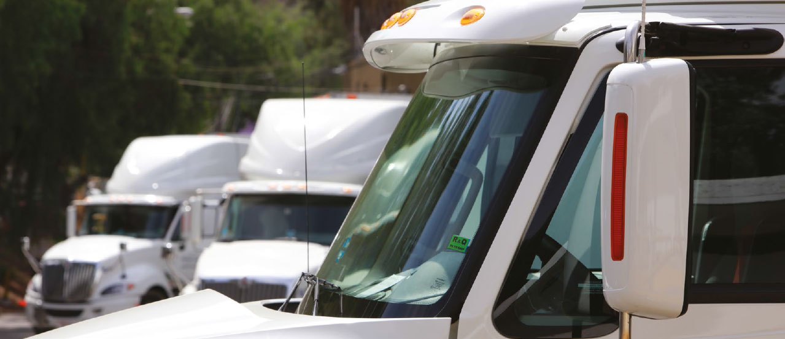
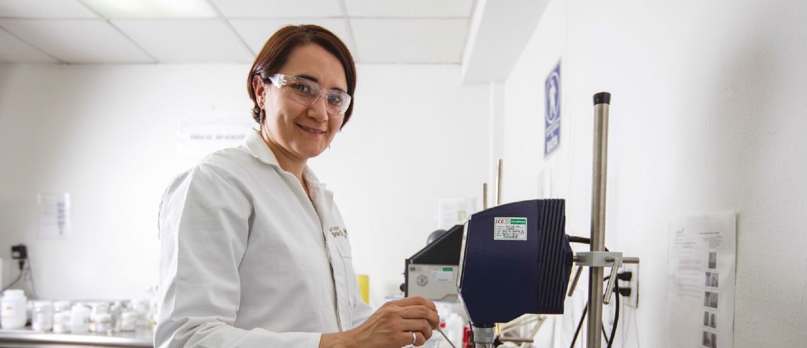
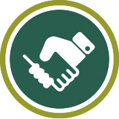
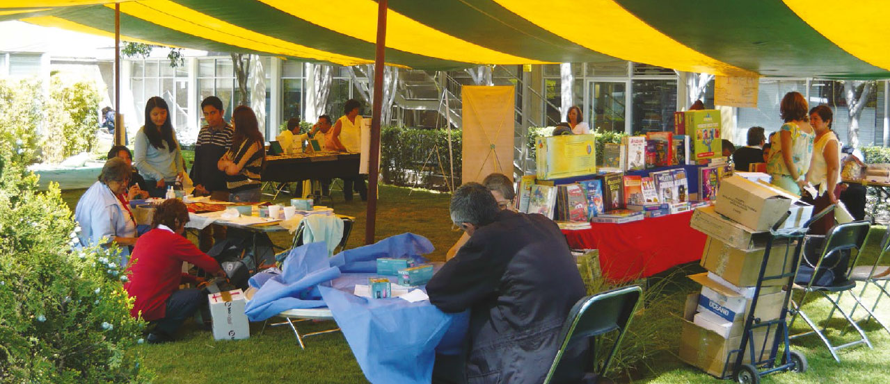

Integrated Annual Report 2015
OUR

STAKEHOLDERS
G4-24, G4-25, G4-26, G4-27We have identified our stakeholders from the perspective of strategic planning and seek to engage them while keeping open channels of communication with varying frequencies in order to be more aware of their needs and expectations.



Clients
We provide our clients with services in addition to the sale of products, such as:
- Training in safety requirements and compliance for product handling
- Safety evaluations and recommendations on installations and infrastructure
- Advisory services on product application and functionality through our application laboratories
- Post sales service
- Sustainable product alternatives
- FSC certified papers
- Sugar substitutes
- Low in sodium materials
- Recycling of used solvents
- Biodegradable materials


Associates
With our associates:
- Strict labor compliance
- Agreements with suppliers of goods and services that set preferential conditions and prices
- Policy regarding working from home and flexible hours
- Orienta line
- Transparency line

Society G4-SO1
With society in general:
- Participation in mutual support groups
- Training in learning centers and institutions
- Donations to communities
- Each year we support the Kardias race, with donations made by our personnel
- Fundación Julián with donations made by our personnel.
- Annual donations to institutions and government bodies
- Fire fighters, equipment donation and materials for training exercises
- Red Cross, equipment donations
- DIARQ, office materials
- Fundasida, cash donation
Organization memberships G4-16
We are constantly engaged in a number of civil organizations including:
- ANIQ
- CANACAR
- AMEDIR
- ANAFAPYT
- AIVAC
- CANACINTRA
- NACD
- AIIPM
- OMNICHEM
- FSC
- NPTA